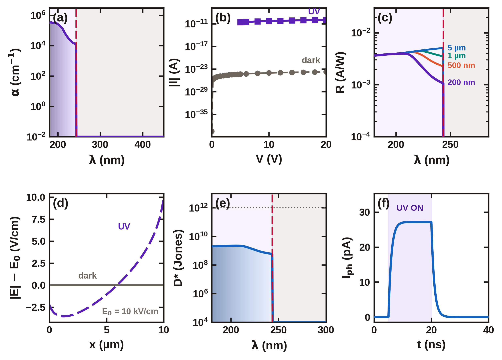
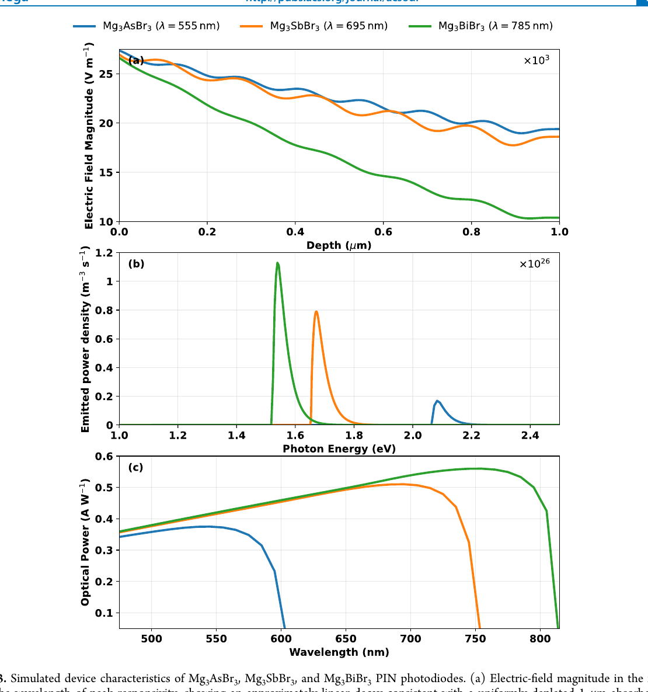
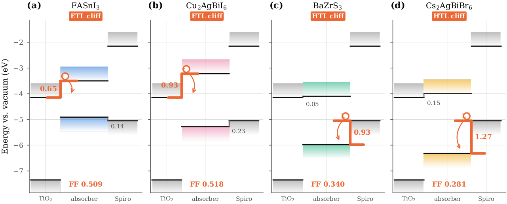

Energy materials
Lead-free absorbers for solar and optoelectronics
DFT, hybrid-functional band structures, phonons, optical response, and stability analysis for perovskites and double perovskites.
View research map ↗Physics graduate · University of Dhaka
I study how atom-scale structure becomes useful technology—combining first-principles computation, device simulation, and a growing practice in sustainable materials synthesis.
Seeking fully funded PhD opportunities in energy and environmental materials
Research direction
My work is centered on lead-free and wide-bandgap materials for cleaner energy, sensing, and environmental technologies. Computation gives me a way to ask precise questions; experiments give those questions a path into the world.
Energy materials
DFT, hybrid-functional band structures, phonons, optical response, and stability analysis for perovskites and double perovskites.
View research map ↗Device modeling
Drift–diffusion and multiphysics simulations for photodiodes, photodetectors, and emerging semiconductor devices.
See device study ↗Synthesis & characterization
Building experience in hydrothermal and solvothermal synthesis, MOF heterostructures, photocatalysis, and structure–property validation.
Explore the direction ↗Selected publications

Published · 21 Sep 2026Journal of Materials Chemistry C · Published 21 September 2026
A combined HSE06 and device-simulation study of a wide-gap oxide with a 243.6 nm cutoff and nanosecond response.

PublishedACS Omega · 2026 · DOI 10.1021/acsomega.5c11440
Lead-free materials whose bandgap and responsivity can be tuned across the pnictogen series.

Under revisionAdvanced Electronic Materials · 2026
A coupled opto-electrical COMSOL study that traces voltage and fill-factor losses to transport-layer interfaces.
Machine Learning: Science and Technology · under review
Uncertainty-aware ML descriptors for oxide double perovskites.
A result in one glance
In the Sr₂PrSbO₆ study, the calculated absorption edge falls at 243.6 nm—inside the solar-blind UV-C window. The device model carries that materials result through to responsivity, detectivity, and response time.
Undergraduate life
A visual archive of the people, places, and everyday moments that shaped my undergraduate life at the University of Dhaka.
Open photo gallery ↗Centennial Celebration of Bose–Einstein Statistics · poster contribution
Let's talk research
I am actively seeking a fully funded PhD position where computational materials science can meet energy, environmental, and experimental research.